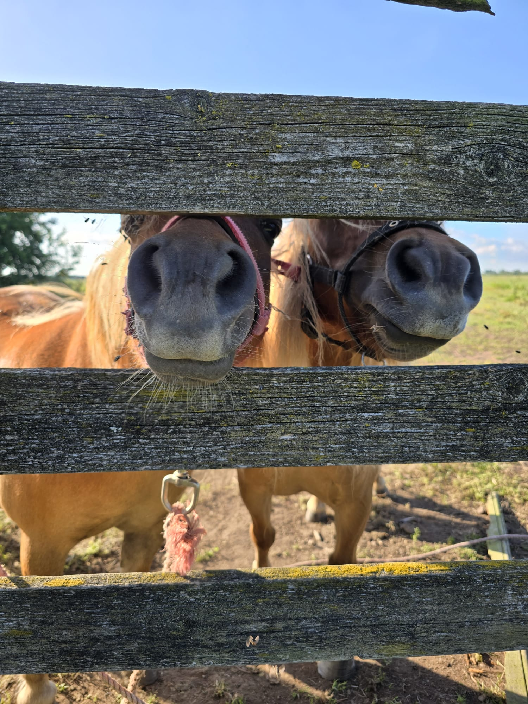

About Me
I am a Ph.D. candidate focused on developing computational models of child cognition,
such as working memory in an adaptive online learning environment, employing a Bayesian approach.
I am affiliated with the EdAptiv Lab and the Amsterdam Mathematical Psychology Lab (AMPL)
within the Psychological Methods Group.
Research
My research lies at the intersection of cognitive development, educational technology, and statistical modeling.
I investigate how children learn and think, with a particular focus on combining theories of (mathematical) cognition
with Bayesian computational models and large-scale behavioral data. Using data from Prowise Learn, an adaptive online
learning platform used by Dutch primary schools, I explore how cognitive skills can inform
and improve adaptive learning systems. My work aims to bridge empirical psychology with modern statistical tools to better
understand and support learning processes in children.
Currently, I lead two projects that reflect this goal. The first centers on working memory, where I examine how performance
on serial recall tasks develops across childhood. The second project focuses on clock reading, a cognitively demanding skill
that draws on time perception, language, math, and memory. Both projects aim to contribute to theoretical understanding while offering
insights that can improve adaptive educational technologies.
Courses Taught
- 2023–2024: Programming in Psychological Science, Supervision of Bachelor's Projects
- 2024–2025: Programming in Psychological Science
Publications
Ertekin, Ş. N., Hofman, A. D., van der Maas, H., Matzke, D., Streitberger, C., & Haaf, J. M. (2025).
Extending empirical benchmarks of working memory to children: Insights from an adaptive learning environment.
Developmental Psychology.
https://doi.org/10.1037/dev0001992
Acarturk, C., & Ertekin, S. (2024).
Spatial Term Variety Reflected in Eye Movements on Visual Scenes.
In Proceedings of the Annual Meeting of the Cognitive Science Society, 46.
https://escholarship.org/uc/item/71v0m351
Ertekin, Ş. N. (2021). An investigation of Turkish static spatial semantics in terms of lexical variety: an eye tracking study (Master's thesis, Middle East Technical University).
Posters
-
Ertekin, Ş. N., Ye, L., Hofman, A. D., & Haaf, J. M. (2024, November 21–24).
Playing with Cognition: Investigating How Children Learn to Tell Time Within a Large-Scale Online Learning Environment.
Poster presented at the Psychonomic Society 65th Annual Meeting, New York City.
-
Ertekin, Ş. N., Hofman, A. D., & Haaf, J. M.
Extending Working Memory Benchmarks to Children Using a Large-Scale Online Adaptive Learning Environment.
Poster available via mathpsych.org.
-
Ertekin, Ş. N., Hofman, A. D., & Haaf, J. M. (2024, June 25–27).
Playing with Memory: Benchmarks in Children's Working Memory within a Large-Scale Online Learning Environment.
Poster presented at the International Conference on Working Memory (ICWM), Leeds, UK.
-
Ertekin, Ş. N., Hofman, A. D., & Haaf, J. M. (2023, July).
Playing with Memory: Working Memory Development in Primary School.
Poster presented at MathPsych/ICCM/EMPG 2023.
Abstract available via mathpsych.org.
-
Yilmaz, F., Amrani El Yaakoubi, N., Ertekin, Ş. N., Kotoyants, N., Wodeyar, A., & Keogh, C. (2022, July 9–13).
Investigating Neural Signatures of Working Memory in Frontoparietal Electrocorticography.
Poster presented at the FENS Forum, Paris, France.
-
Ertekin, Ş. N., & Acartürk, C. (2021, September 7–8).
Türkçede Statik Uzamsal Dil Semantiğinin Kelime Çeşitliliği Açısından İncelenmesi: Bir Göz Hareketleri Takip Çalışması.
Poster presented at the Experimental-Cognitive Psychology Symposium, Ankara, Turkey.
[link]
Blog
Woerden Writing Retreat (July 7–11, 2025)
We spent a few days in the quiet town of Woerden for a collaborative writing retreat — and it was such a refreshing and productive experience!
The time away from the city helped us focus, plan, and make real progress on our ongoing research projects.
Beyond the writing, we also had great conversations, long walks, and cozy coffee breaks.
Here's a small glimpse from the retreat:
